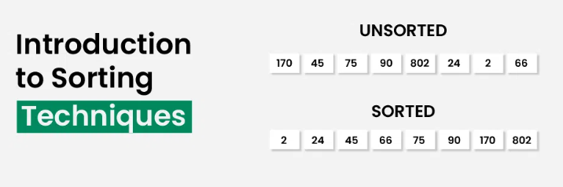
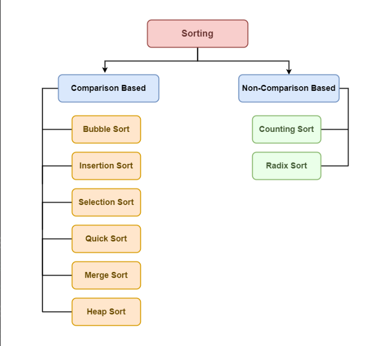
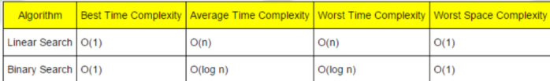
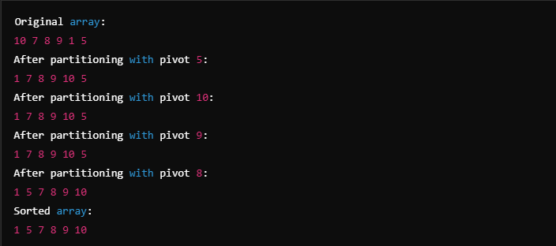

Search and Sort are fundamental concepts in computer science that refer to the processes of finding specific elements within a dataset and arranging that dataset in a specific order, respectively.
Search Algorithms are techniques used to find a specific value or group of values within a collection of data. Some common search algorithms include:
Linear Search: A simple search method that checks each element one by one until the desired element is found or the end of the list is reached.
Binary Search: An efficient search algorithm that works on sorted arrays by repeatedly dividing the search interval in half.
Hashing: A method that uses a hash table to enable fast data retrieval, with an average time complexity of O(1) for lookups.
Sort Algorithms are methods used to arrange the elements of a dataset in a certain order, such as ascending or descending. Common sorting algorithms include:
Bubble Sort: A simple comparison-based sorting algorithm that repeatedly steps through the list, comparing adjacent elements and swapping them if they are in the wrong order.
Merge Sort: A divide-and-conquer algorithm that divides the dataset into smaller sub-arrays, sorts them, and then merges them back together.
Quick Sort: An efficient sorting algorithm that selects a 'pivot' element and partitions the other elements into those less than and greater than the pivot.


TIME COMPLEXCITY

APPLICATIONS OF SEARCH AND SORT
Efficient Data Retrieval: Search algorithms allow for quick access to data in large datasets, enhancing overall application performance.
Data Organization: Sorting algorithms arrange data in a specific order, making it easier to manage and analyze.
Search Optimization: Algorithms like Binary Search improve search efficiency, reducing the time complexity compared to linear search methods.
Database Management: Search and sort algorithms are fundamental in database systems for querying and organizing data efficiently.
Data Analytics: Sorting and searching are crucial in data analytics, allowing for easier trend identification and reporting.
Recommendation Systems: Search and sort algorithms are used to rank items based on user preferences, enhancing user experience.
CODE
QUICK SORT
#include
void swap(int *a, int *b) {
int temp = *a;
*a = *b;
*b = temp;
}
int partition(int arr[], int low, int high) {
int pivot = arr[high];
int i = low - 1;
for (int j = low; j < high; j++) {
if (arr[j] < pivot) {
i++;
swap(&arr[i], &arr[j]);
}
}
swap(&arr[i + 1], &arr[high]);
return i + 1;
}
void quickSort(int arr[], int low, int high) {
if (low < high) {
int pi = partition(arr, low, high);
quickSort(arr, low, pi - 1);
quickSort(arr, pi + 1, high);
}
}
void printArray(int arr[], int size) {
for (int i = 0; i < size; i++) {
printf("%d ", arr[i]);
}
printf("\n");
}
int main() {
int arr[] = {10, 7, 8, 9, 1, 5};
int size = sizeof(arr) / sizeof(arr[0]);
printf("Original array: ");
printArray(arr, size);
quickSort(arr, 0, size - 1);
printf("Sorted array: ");
printArray(arr, size);
return 0;
}
OUTPUT

LINEAR SEARCH
#include
int linearSearch(int arr[], int n, int key) {
for (int i = 0; i < n; i++) {
if (arr[i] == key) return i;
}
return -1;
}
int main() {
int arr[] = {2, 4, 0, 1, 9};
int n = sizeof(arr) / sizeof(arr[0]);
int key = 1;
int result = linearSearch(arr, n, key);
printf("Element found at index: %d\n", result);
return 0;
}
OUTPUT
BINARY SEARCH
#include
int binarySearch(int arr[], int n, int key) {
int left = 0, right = n - 1;
while (left <= right) {
int mid = left + (right - left) / 2;
if (arr[mid] == key) return mid;
if (arr[mid] < key) left = mid + 1;
else right = mid - 1;
}
return -1;
}
int main() {
int arr[] = {1, 2, 4, 5, 9};
int n = sizeof(arr) / sizeof(arr[0]);
int key = 4;
int result = binarySearch(arr, n, key);
printf("Element found at index: %d\n", result);
return 0;
}